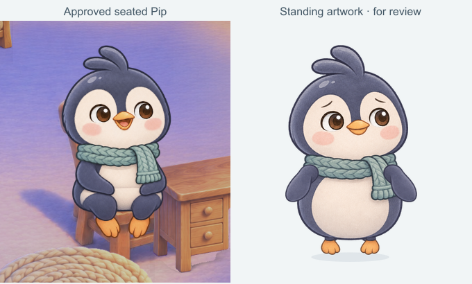
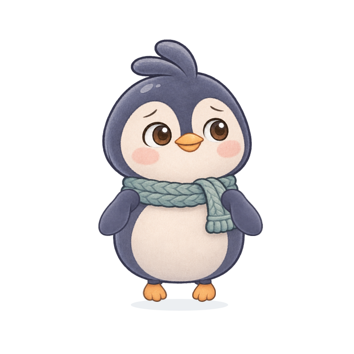
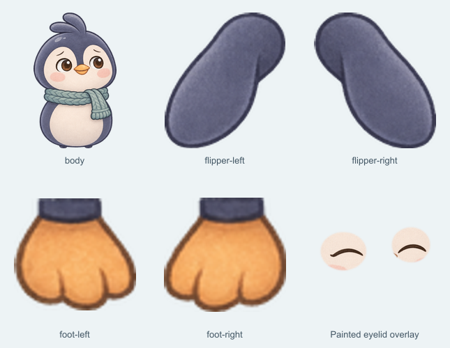
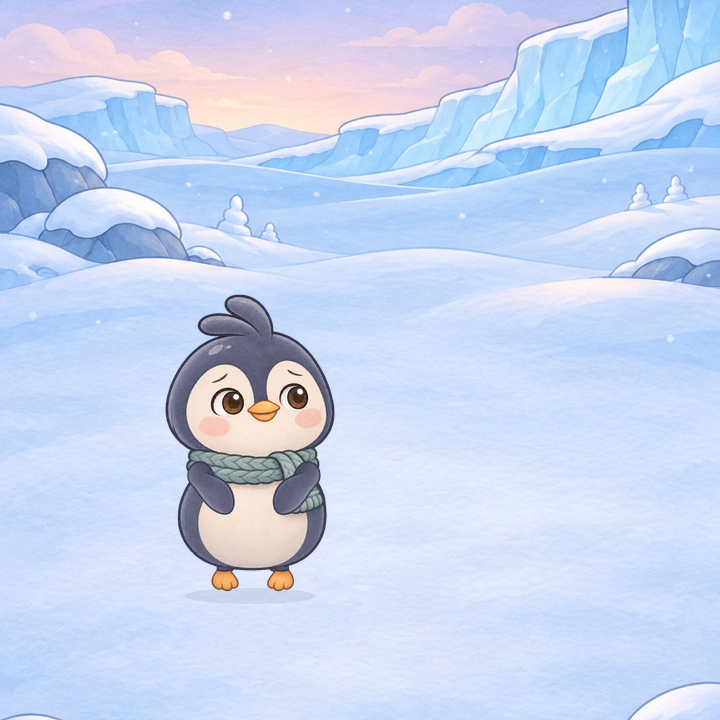

Image 1 is the visual reference. This is a review candidate; the application still uses the previous artwork.

Download MP4Editable Lottie JSONAll review files

Parts below are enlarged individually for inspection; they are not displayed at a shared scale.

Layered SVG with named image layers

The standing pose, mild cold expression, and painted layers remain subject to your visual approval. Limb animation uses independent rotations; the head and scarf remain one body layer.